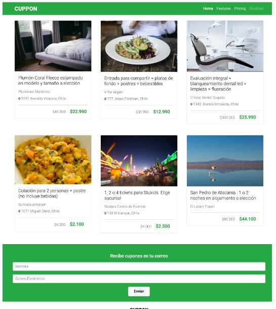

Sistema de grillas Bootstrap

implementar el sistema de grillas de Bootstrap, distribuyendo el contenido
adecuadamente, para hacer una página web adaptable a distintos dispositivos, aplicando las
clases de Bootstrap a través de los componentes card y formularios, utilizando la
documentación disponible
Revisa el código